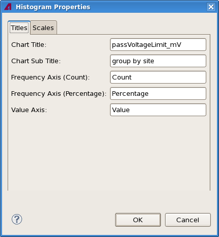
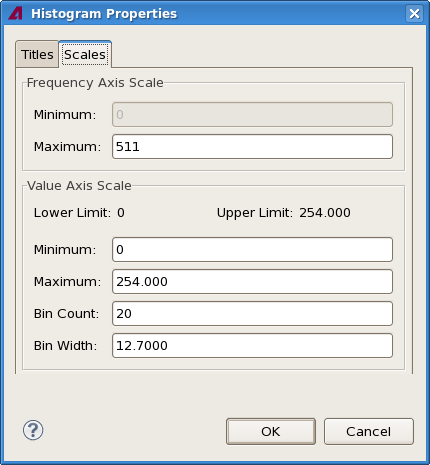

Histogram properties
The Histogram Properties dialog lets you specify certain aspects of the look of a Histogram view, including the labels and the setting for the axes.
The dialog has two tabs, both of which are described below.
Titles

The Titles tab contains these elements:
- Chart Title: This field contains the title displayed at the
top of the chart.
By default, this is the test name and the test number in parentheses.
- Chart Subtitle: The subtitle displayed beneath the title of
the chart.
By default, this is the grouping of the displayed tests. If there is no grouping, the field is empty.
- Frequency Axis (Count): The title for the right frequency axis.
By default, this is "Count".
- Frequency Axis (Percentage): The title for the left frequency
axis.
By default, this is "Percentage".
- Value Axis: The title for the data axis.
By default, this is the unit used for the measured values.
Scales

The Scales tab contains these elements:
- Frequency Axis Scale:
- Minimum: The lowest value displayed on the axis. This value is always 0.
- Maximum: The highest value displayed on the axis.
- Data Axis Scale:
The Lower Limit and Upper Limit fields display the limits with which the displayed test has been executed.
- Minimum: The lowest value displayed on the data axis.
- Maximum: The highest value displayed on the data axis.
- Bin Count: The number of categories ("bins") into which the data axis is divided.
- Bin Width: The value interval of each data category ("bin"). This number indicates, how "wide" the category is; it is the difference between the upper and the lower limit of the category.
Functional changes
- Introduced in SmarTest 7.2.0
- SmarTest 7.2.2: Changed value axis name